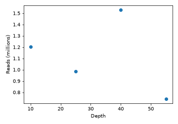

All in One View
Content from Using RMarkdown
Last updated on 2026-08-05 | Edit this page
Estimated time: 12 minutes
Overview
Questions
- How do you write a lesson using R Markdown and sandpaper?
Objectives
- Explain how to use markdown with the new lesson template
- Demonstrate how to include pieces of code, figures, and nested challenge blocks
Introduction
This is a lesson created via The Carpentries Workbench. It is written in Pandoc-flavored Markdown for static files and R Markdown for dynamic files that can render code into output. Please refer to the Introduction to The Carpentries Workbench for full documentation.
What you need to know is that there are three sections required for a valid Carpentries lesson template:
-
questionsare displayed at the beginning of the episode to prime the learner for the content. -
objectivesare the learning objectives for an episode displayed with the questions. -
keypointsare displayed at the end of the episode to reinforce the objectives.
Inline instructor notes can help inform instructors of timing challenges associated with the lessons. They appear in the “Instructor View”
Challenge 1: Can you do it?
What is the output of this command?
R
paste("This", "new", "lesson", "looks", "good")
OUTPUT
[1] "This new lesson looks good"Challenge 2: how do you nest solutions within challenge blocks?
You can add a line with at least three colons and a
solution tag.
Figures
You can also include figures generated from R Markdown:
R
pie(
c(Sky = 78, "Sunny side of pyramid" = 17, "Shady side of pyramid" = 5),
init.angle = 315,
col = c("deepskyblue", "yellow", "yellow3"),
border = FALSE
)

Or you can use standard markdown for static figures with the following syntax:
{alt='alt text for accessibility purposes'}
Callout sections can highlight information.
They are sometimes used to emphasise particularly important points but are also used in some lessons to present “asides”: content that is not central to the narrative of the lesson, e.g. by providing the answer to a commonly-asked question.
Math
One of our episodes contains \(\LaTeX\) equations when describing how to create dynamic reports with {knitr}, so we now use mathjax to describe this:
$\alpha = \dfrac{1}{(1 - \beta)^2}$ becomes: \(\alpha = \dfrac{1}{(1 - \beta)^2}\)
Cool, right?
- Use
.mdfiles for episodes when you want static content - Use
.Rmdfiles for episodes when you need to generate output - Run
sandpaper::check_lesson()to identify any issues with your lesson - Run
sandpaper::build_lesson()to preview your lesson locally
Content from Python with reticulate
Last updated on 2026-08-05 | Edit this page
Estimated time: 20 minutes
Overview
Questions
- How do I run Python code in a Workbench lesson?
- How do I declare the Python packages an episode needs?
- How do I pass objects between R and Python?
Objectives
- Declare an episode’s Python dependencies with
py_require() - Write and execute
{python}chunks alongside{r}chunks - Move data across the language boundary with
py$andr.
Declaring what the episode needs
Delete this episode if your lesson is R only. If it is not,
everything you need is in the hidden python-setup chunk at
the top of this file, which reads:
R
Sys.setenv(RETICULATE_PYTHON = "managed")
library(reticulate)
py_require(
packages = c("pandas", "matplotlib"),
python_version = "3.12",
exclude_newer = "2026-08-01"
)
Two conventions to follow when you copy it. Give the chunk
include=FALSE so the plumbing does not appear in the
rendered episode, and do not label it
setup: sandpaper injects a chunk of that name into
every episode and knitr rejects duplicate labels.
py_require() does not install anything on its own. It
records what the session needs, and the first time a
{python} chunk runs, reticulate uses uv to build an ephemeral virtual
environment satisfying the whole set, downloading the interpreter as
well as the packages. Nothing lands in your system Python and nothing
needs to exist beforehand.
Version constraints use pip syntax, so "pandas>=2.2"
and "scikit-learn==1.5.2" both work.
Why
RETICULATE_PYTHON = "managed"
reticulate walks an order of discovery and only falls
back to an ephemeral environment if it finds no Python earlier in that
order. On a machine with conda or miniforge on the PATH,
conda wins, your py_require() calls are silently ignored,
and the episode renders against whatever happens to be in that
environment. It then fails in CI, where that environment does not exist.
Setting "managed" forces the reproducible path in both
places.
Running Python
A {python} chunk works exactly like an {r}
chunk:
PYTHON
import pandas as pd
measurements = pd.DataFrame({
"sample": ["A", "B", "C", "D"],
"depth": [10, 25, 40, 55],
"reads": [1_204_000, 987_000, 1_530_000, 742_000],
})
measurementsOUTPUT
sample depth reads
0 A 10 1204000
1 B 25 987000
2 C 40 1530000
3 D 55 742000Objects persist between Python chunks in the same episode, in one shared session:
OUTPUT
depth reads reads_per_m
count 4.000000 4.000000e+00 4.000000
mean 32.500000 1.115750e+06 1.115750
std 19.364917 3.344930e+05 0.334493
min 10.000000 7.420000e+05 0.742000
25% 21.250000 9.257500e+05 0.925750
50% 32.500000 1.095500e+06 1.095500
75% 43.750000 1.285500e+06 1.285500
max 55.000000 1.530000e+06 1.530000Crossing the language boundary
Python objects are reachable from R through py$,
converted to their R equivalents. A pandas DataFrame
arrives as a data.frame:
R
str(py$measurements)
OUTPUT
'data.frame': 4 obs. of 4 variables:
$ sample : chr "A" "B" "C" "D"
$ depth : num 10 25 40 55
$ reads : num 1204000 987000 1530000 742000
$ reads_per_m: num 1.204 0.987 1.53 0.742
- attr(*, "pandas.index")=RangeIndex(start=0, stop=4, step=1)R
summary(py$measurements$reads)
OUTPUT
Min. 1st Qu. Median Mean 3rd Qu. Max.
742000 925750 1095500 1115750 1285500 1530000 R objects go the other way through r.:
R
threshold <- 1e6
OUTPUT
sample reads
0 A 1204000
2 C 1530000Plots
Matplotlib figures render like any other chunk output. Set
fig.alt for accessibility, exactly as you would for an R
plot:
PYTHON
import matplotlib.pyplot as plt
fig, ax = plt.subplots(figsize = (5, 3.5))
ax.scatter(measurements["depth"], measurements["reads_per_m"])
ax.set_xlabel("Depth")
ax.set_ylabel("Reads (millions)")
fig.tight_layout()
plt.show()
Challenge 1: add a dependency
The episode needs numpy as well. What do you change, and
what do you commit?
Add it to the py_require() call in the setup chunk:
R
py_require(c("pandas", "matplotlib", "numpy"), python_version = "3.12")
Nothing else. Python packages are not recorded in
renv.lock, so the .Rmd file itself is the only
thing to commit. Contrast this with adding an R
package, where you add library(...), rebuild, and then also
commit the changed
renv/profiles/lesson-requirements/renv.lock.
Challenge 2: which Python is actually running?
How would you check, from inside the episode, that the managed environment is being used rather than a conda install?
R
reticulate::py_config()
The reported python path should sit under reticulate’s
own cache directory, not under miniforge3/ or
/usr/bin.
When this is not enough
py_require() resolves from PyPI. If your lesson needs a
bioconda stack, or tools that are not packaged for PyPI, commit an
environment.yml, point RETICULATE_PYTHON at
that environment’s interpreter instead of "managed", and
add a conda setup step to
.github/workflows/docker_build_deploy.yaml. That is
considerably more to maintain, so check first whether the episode should
be showing pipeline output rather than executing a pipeline at
build time.
-
Sys.setenv(RETICULATE_PYTHON = "managed")forces the reproducible environment; without it a local conda install wins and the build differs from CI -
py_require()declares packages and the Python version;uvprovisions them on first use -
exclude_newercaps resolution at a date, sincerenv.locknever records Python packages -
py$namereads Python objects from R,r.namereads R objects from Python - No CI change is needed:
uvfetches the interpreter inside the build container